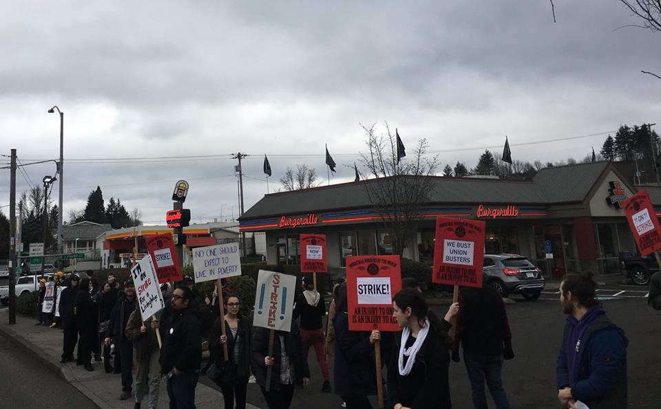
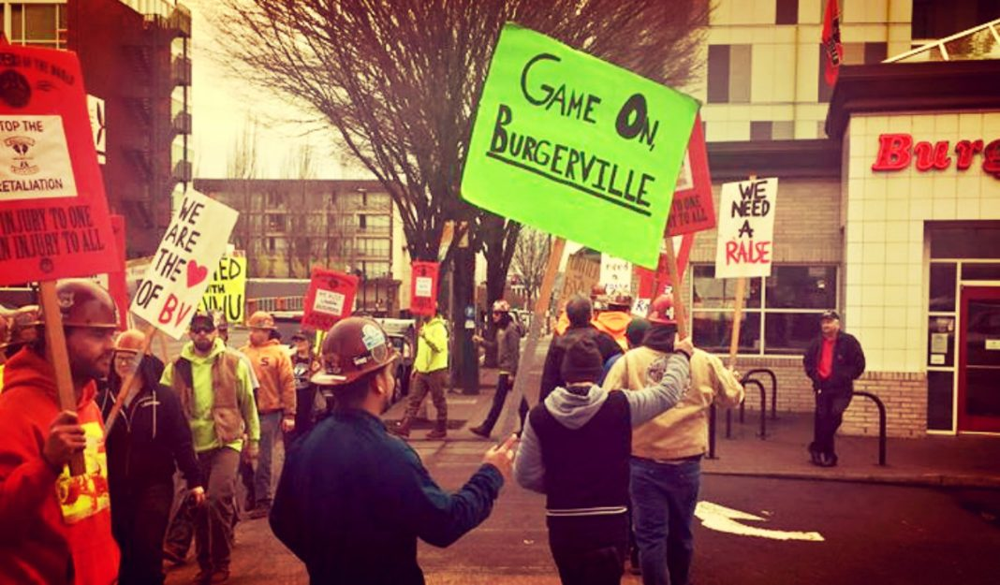
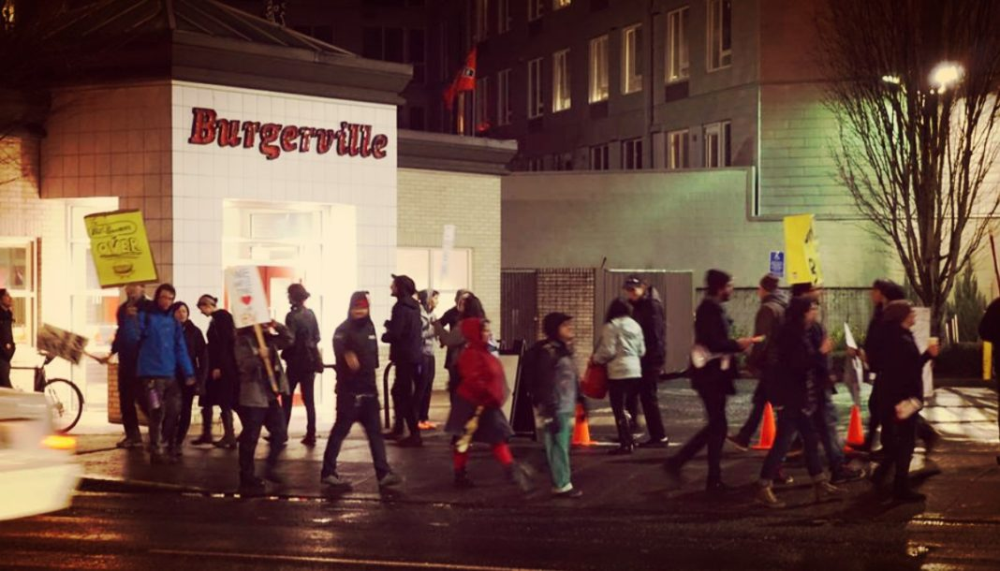

Submitted on Wed, 02/07/2018 - 8:28pm
By Burgerville Workers Union - It's Going Down, February 4, 2018
On Saturday, February 3rd, members of the Burgerville Workers Union, (BVWU), a part of the revolutionary anti-capitalist labor union, the Industrial Workers of the World (IWW), announced that a third and fourth store had officially joined the strike. Meanwhile, Burgerville Workers Union members also announced a public boycott of the store as pickets continued over the weekend. On Sunday, the union announced that it was ending its three day strike and that on Monday, workers would be returning to work, however the struggle would continue.

Submitted on Wed, 02/07/2018 - 8:19pm
By Burgerville Workers Union - It's Going Down, February 4, 2018
Yesterday, fast food workers and members of the Burgerville Workers Union (BVWU), a part of the revolutionary anti-capitalist union the Industrial Workers of the World (IWW), launched a strike at the Burgerville USA chain in Portland, Oregon. Today, they announced that the strike had spread to yet another store. Below are updates from the Burgerville Workers Union social media accounts.
On February 2nd the union announced:
ANOTHER STRIKE! Today at 11:15 a.m. union workers at the 25th and Powell store delegated management and walked off the job on strike. Union members and supporters are out picketing the store now and have been providing pizza to Cleveland High School students and staff who’ve joined them on the picket lines! This is the second store to walk out in as many days, and wiith Convention Center workers on day two of their strike, this is now the largest strike in BVWU history! Convention Center workers: we got your back! Special thanks for the purple solidarity we received from SEIU 49!
The Burgerville Workers Union has been hard at work for months now to empower workers and organize a strike. Yesterday, we got to see all those hours of hard work and planning come to fruition after the walkout and strike performed at the Convention Center location. Now is the time for Burgerville Corporate to hear what we’ve been trying to communicate for years. As workers, we deserve better.
Submitted on Wed, 02/07/2018 - 8:12pm
By Burgerville Workers Union - It's Going Down, February 1, 2018
In Portland, Oregon, fast food workers with Burgerville USA have walked off the job and launched a strike. In recent months, more Burgerville workers in a variety of stores have joined the union, the revolutionary anti-capitalist Industrial Workers of the World (IWW). What follows is a direct report and announcement on the strike from the Burgerville Workers Union. Follow their social media accounts on Twitter and Facebook for up to the minute updates, and be sure to check our past coverage of their struggle as well as their appearances on our podcast.
Workers at the Convention Center Burgerville just walked off the job, launching a strike and kickstarting the biggest weekend of action yet from the Burgerville Workers Union.
April will mark the BVWU’s second anniversary of going public. Since 2016, our demands have largely remained the same: fair wages, consistent scheduling, and affordable health care. We as a union have grown since then. We have found new ways to support each other, and we have won victories in the workplace that make the weight of our day to day lives easier to bear.
Despite all of this, however, Burgerville still refuses to negotiate with the union. The company continues to ignore the voices of its workers, prioritizing profits over the human needs of the workers who make those profits possible.
We are on strike today because no one deserves to live in poverty. Life in Portland only gets harder – rents go up, groceries get more expensive, and Burgerville wages stay unlivable.
Submitted on Mon, 01/29/2018 - 11:10pm
By BVWU - It's Going Down, January 25, 2018

On Wednesday, January 24th, the Burgerville Workers Union (BWU) held its first picket of 2018 outside of a Burgerville store in Portland. BWU is a part of the revolutionary anti-capitalist union, the Industrial Workers of the World (IWW), and in the past year has grown to include workers in a variety of stores across the chain. Burgerville, which brands itself as a “local” and “woke” large fast food corporation, has refused to negotiate with BWU, and has even hired anti-union goons in an attempt to stop the IWW, as well as firing various organizers over trivial incidents.
Submitted on Mon, 09/04/2017 - 8:54pm
By Staff - It's Going Down, September 4, 2017
 Members of the Industrial Workers of the World (IWW) launched a strike in Portland, Oregon at fast food chain Burgerville. The strike is the latest move by workers at the chain who have been organizing for months and demanding wage increases, an end to harassment for union activities, better schedules, and improvements of conditions. The group announced the strike on Labor Day with a statement on their Facebook page:
Members of the Industrial Workers of the World (IWW) launched a strike in Portland, Oregon at fast food chain Burgerville. The strike is the latest move by workers at the chain who have been organizing for months and demanding wage increases, an end to harassment for union activities, better schedules, and improvements of conditions. The group announced the strike on Labor Day with a statement on their Facebook page:
The very first Labor Day was a massive strike and parade organized by thousands of workers in New York City in 1882. The chance for millions and millions of people to spend time with family and community this Monday was made possible by power wielded time and time again by striking workers.
Ironically, we workers at Burgerville don’t get to enjoy this day dedicated to celebrating the power of workers. Working at Burgerville means we can’t take proper holidays, since doing so means taking a substantial pay cut or facing retaliation from management. Working at Burgerville means that we spend our holidays working for minimum wage just like any other day, fully aware of all the memories with friends and family we are missing out on.
That’s why we are going on strike today.
Instead of going to work for poverty wages while corporate bigshots take vacations, we are taking a stand. We are taking back Labor Day for our families, our friends, our coworkers, and ourselves. We are taking back Labor Day because we know that better pay, fair schedules, consistent hours, and healthier work environments have only ever been won by workers standing together and fighting for them.
We are the heart of Burgerville and we deserve a change!
The strike also takes place as fast food workers at McDonald’s in the UK are also on strike. Burgerville workers union writes:
McDonald’s workers at two shops in England voted to go on a strike on September 4. These workers are organized through the Bakers, Food and Allied Workers Union (BFAWU), whose demands include wage increases and more consistent scheduling (Sound familiar?)
Immediately after the announcement of a strike, McDonald’s stated that by the end of 2017 they will implement a guaranteed hours contract to every McDonald’s worker in the UK. The BFAWU plans to carry on with their strike to push for their other demands and to hold McDonald’s to their word.
Victory to the strikers!